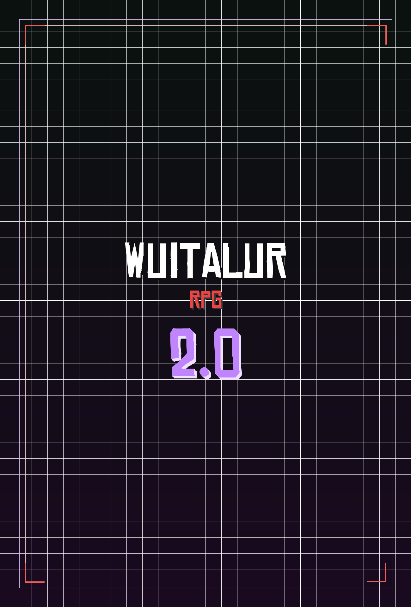

Tudo o que está presente neste sistema é uma versão alpha e tudo aqui está sujeito a alterações, rebalanceamentos e ampliações no futuro.

Módulos do Sistema
Atributos
A matriz dos 5 atributos básicos, a distribuição fixa de bônus e o motor de rolagens com d20.
Raças
11 espécies com status, mecânicas exclusivas e características marcantes no showcase interativo.
Vocações
Histórico prático e função social do herói, concedendo perícias, ferramentas e poderes únicos.
Perícias
12 perícias abrangentes com mecânica de maestria por vantagem (2d20 maior) e atributos-chave.
Combate & Defesa
Desviar versus Defender, DEF unificada, economia de ações por rodada e manobras especiais.
Condições
Tabela geral com 20 estados de combate: condições físicas, sensoriais, contínuas e elementais exclusivas.
Classes
Papéis táticos compostos e as classes Consagrados e Compactador detalhadas do nível 1 ao 15.
Equipamentos
Sistema de carga por Força, tabelas de armas brancas, armas de fogo e os 7 kits táticos fechados.
O Conclave
A presença invisível na economia, regras de seleção inicial e o catálogo de suprimentos de partida.
Criador de Fichas 2.0
Assistente guiado em 5 passos com motor de calculo reativo, suporte a rastreadores de classe e regras atipicas.